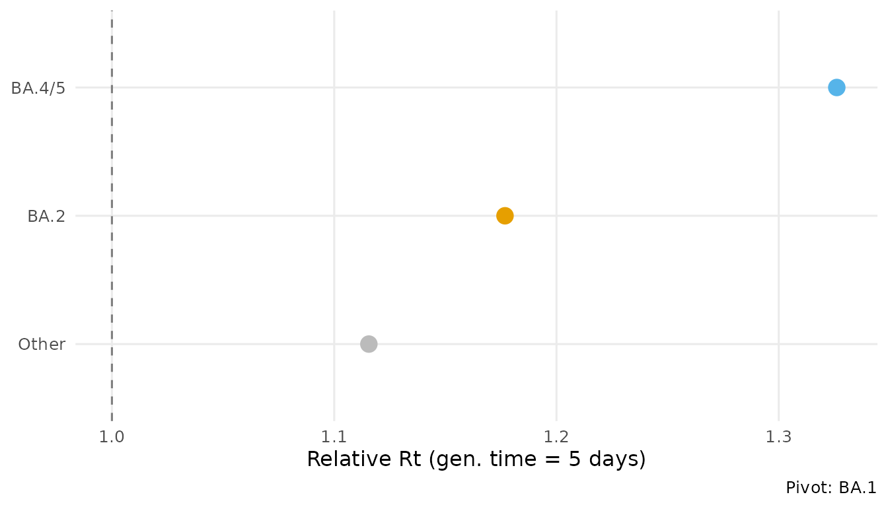
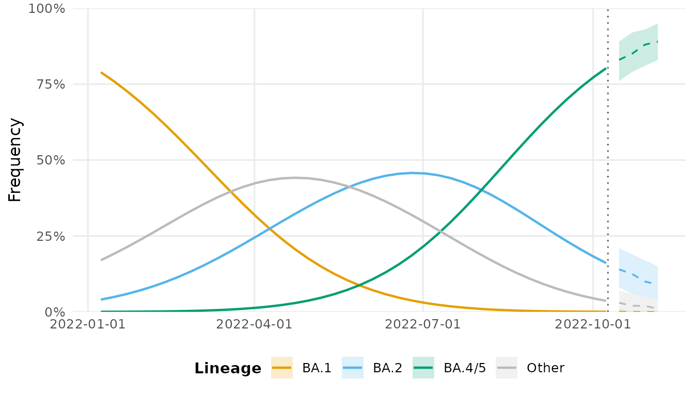

Overview
This vignette demonstrates a complete end-to-end surveillance analysis: from raw count data to actionable outputs. The workflow mirrors what a public health genomics team would run weekly.
Step 1: Load and prepare data
library(lineagefreq)
data(sarscov2_us_2022)
x <- lfq_data(sarscov2_us_2022,
lineage = variant,
date = date,
count = count,
total = total)Step 2: Collapse rare lineages
Real surveillance data often contains dozens of low-frequency
lineages. collapse_lineages() merges those below a
threshold into an “Other” category.
x_clean <- collapse_lineages(x, min_freq = 0.02)
#> Collapsing 1 rare lineage into "Other".
attr(x_clean, "lineages")
#> [1] "BA.1" "BA.2" "BA.4/5" "Other"Step 3: Fit model
fit <- fit_model(x_clean, engine = "mlr")
summary(fit)
#> Lineage Frequency Model Summary
#> ================================
#> Engine: mlr
#> Pivot: BA.1
#> Lineages: 4
#> Time points: 40
#> Total seqs: 461424
#> Parameters: 6
#> Log-lik: -455671
#> AIC: 911355
#> BIC: 911365
#>
#> Growth rates (per 7 days):
#> # A tibble: 4 × 6
#> lineage estimate lower upper type pivot
#> <chr> <dbl> <dbl> <dbl> <chr> <chr>
#> 1 BA.1 0 0 0 growth_rate BA.1
#> 2 BA.2 0.228 0.226 0.229 growth_rate BA.1
#> 3 BA.4/5 0.395 0.393 0.397 growth_rate BA.1
#> 4 Other 0.153 0.152 0.154 growth_rate BA.1Step 4: Growth advantages
ga <- growth_advantage(fit,
type = "relative_Rt",
generation_time = 5)
ga
#> # A tibble: 4 × 6
#> lineage estimate lower upper type pivot
#> <chr> <dbl> <dbl> <dbl> <chr> <chr>
#> 1 BA.1 1 1 1 relative_Rt BA.1
#> 2 BA.2 1.18 1.18 1.18 relative_Rt BA.1
#> 3 BA.4/5 1.33 1.32 1.33 relative_Rt BA.1
#> 4 Other 1.12 1.11 1.12 relative_Rt BA.1
autoplot(fit, type = "advantage", generation_time = 5)
Step 5: Identify emerging lineages
emerging <- summarize_emerging(x_clean)
emerging[emerging$significant, ]
#> # A tibble: 3 × 10
#> lineage first_seen last_seen n_timepoints current_freq growth_rate p_value
#> <chr> <date> <date> <int> <dbl> <dbl> <dbl>
#> 1 BA.2 2022-01-08 2022-10-08 40 0.156 0.00476 0
#> 2 BA.4/5 2022-01-08 2022-10-08 40 0.797 0.0293 0
#> 3 Other 2022-01-08 2022-10-08 40 0.0469 -0.00442 0
#> # ℹ 3 more variables: p_adjusted <dbl>, significant <lgl>, direction <chr>Step 6: Forecast
fc <- forecast(fit, horizon = 28)
autoplot(fc)
#> Warning in ggplot2::scale_x_date(date_labels = "%Y-%m-%d"): A <numeric> value was passed to a Date scale.
#> ℹ The value was converted to a <Date> object.
Step 7: Assess sequencing needs
How many sequences are needed to reliably detect a lineage at 2% frequency?
sequencing_power(
target_precision = 0.05,
current_freq = c(0.01, 0.02, 0.05, 0.10)
)
#> # A tibble: 4 × 4
#> current_freq target_precision required_n ci_level
#> <dbl> <dbl> <dbl> <dbl>
#> 1 0.01 0.05 16 0.95
#> 2 0.02 0.05 31 0.95
#> 3 0.05 0.05 73 0.95
#> 4 0.1 0.05 139 0.95Step 8: Extract tidy results
All results are compatible with the broom ecosystem.
tidy.lfq_fit(fit)
#> # A tibble: 6 × 6
#> lineage term estimate std.error conf.low conf.high
#> <chr> <chr> <dbl> <dbl> <dbl> <dbl>
#> 1 BA.2 intercept -2.97 0.0109 -2.99 -2.95
#> 2 BA.2 growth_rate 0.228 0.000750 0.226 0.229
#> 3 BA.4/5 intercept -7.88 0.0238 -7.93 -7.83
#> 4 BA.4/5 growth_rate 0.395 0.00103 0.393 0.397
#> 5 Other intercept -1.53 0.00823 -1.55 -1.52
#> 6 Other growth_rate 0.153 0.000677 0.152 0.154
glance.lfq_fit(fit)
#> # A tibble: 1 × 10
#> engine n_lineages n_timepoints nobs df logLik AIC BIC pivot
#> <chr> <int> <int> <int> <int> <dbl> <dbl> <dbl> <chr>
#> 1 mlr 4 40 461424 6 -455671. 911355. 911365. BA.1
#> # ℹ 1 more variable: convergence <int>Summary
A typical weekly workflow:
-
lfq_data()— ingest new counts -
collapse_lineages()— clean up rare lineages -
fit_model()— estimate dynamics -
summarize_emerging()— flag growing lineages -
forecast()— project forward 4 weeks -
autoplot()— generate report figures